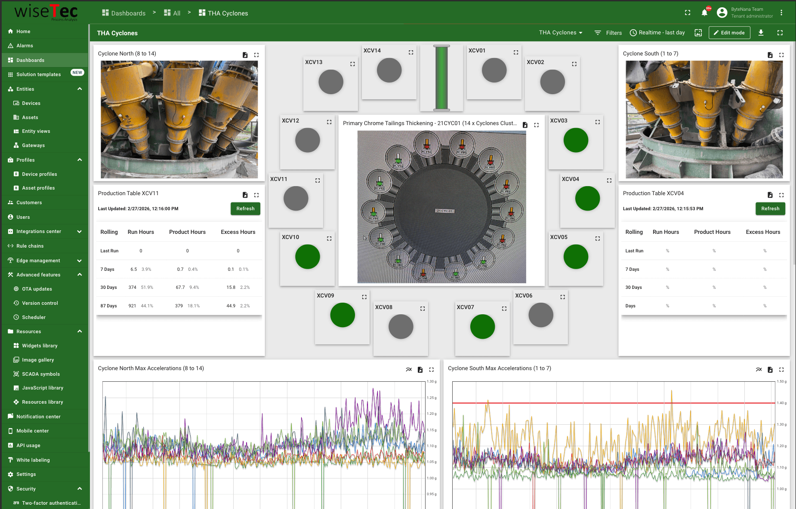
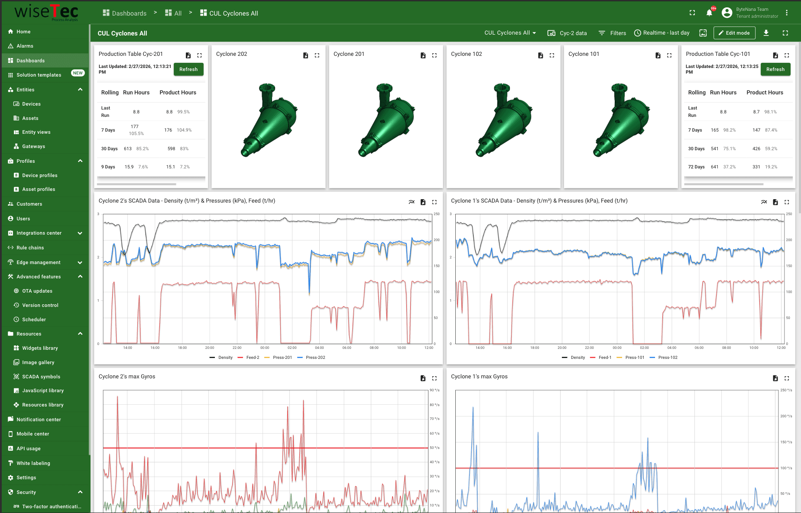
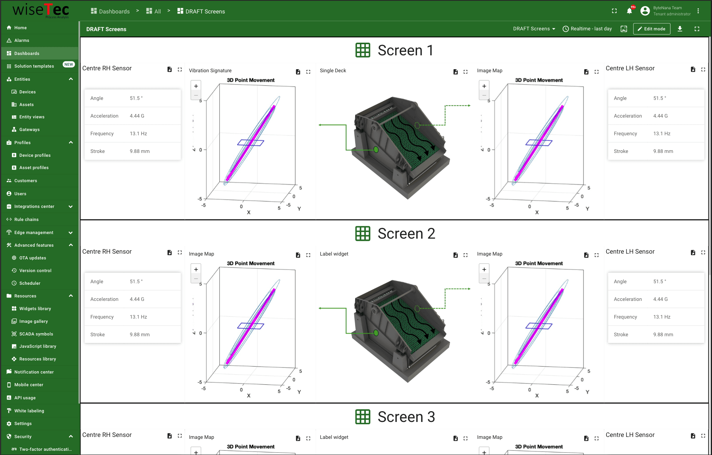

Revolutionizing mineral processing reliability with IIoT predictive maintenance
How ByteNana engineered the WiseTec system — a robust sensor-to-cloud solution boosting production uptime for global mining clients.
01 — The challenge
Reliability in a harsh environment
Multotec needed to enhance mineral-processing reliability for their global clients. Traditional methods lacked real-time visibility into equipment health, leading to reactive repairs and costly production downtime in unforgiving mining environments. They required an intelligent, rugged solution capable of delivering predictive insights from the edge to the cloud.


02 — The WiseTec solution
An end-to-end IIoT ecosystem
ByteNana engineered a complete ecosystem, from modular firmware at the edge to advanced telemetry in the cloud — using modular C++/FreeRTOS on ESP32 smart sensors to guarantee robust performance under constraint.
Smart Sensor
ESP32 · C++ / FreeRTOS
Secure Gateway
Hardened telemetry uplink
ThingsBoard Backend
Ingest & normalize streams
Angular Dashboard
Real-time visualization & OTA
03 — Inside the platform
The WiseTec dashboard
Real-time process analysis built on ThingsBoard — live equipment health, vibration signatures, and cyclone-level SCADA telemetry across global sites.



04 — Engineered for resilience and scale
What we built
Intelligent edge firmware
Modular C++/FreeRTOS firmware optimized for ESP32, enabling real-time decision-making directly at the sensor level.
Robust OTA updates
Future-proofed the whole system with remote, secure updates for both the hardware firmware and the Angular front-end.
Advanced telemetry normalization
A ThingsBoard backend ingests, normalizes, and manages massive streams of complex industrial sensor data.
Predictive insights dashboard
A custom Angular front-end delivering real-time visualization and actionable alerts to boost production efficiency.
05 — The result
Boosting global production uptime
The WiseTec system successfully transitioned Multotec's clients from reactive repairs to proactive, predictive maintenance. By delivering real-time insights and robust device management, the solution directly increased efficiency and reduced costly operational downtime across global mining sites.
06 — Technologies used
The stack behind WiseTec
C++, FreeRTOS & ESP32
High-performance data processing directly on the hardware — where raw industrial signals are captured and refined.
ThingsBoard
Normalizes telemetry and manages device fleets — the intelligent middleman ensuring data integrity and security between the mine and the cloud.
Angular
Delivers the final visualization and interactive dashboards — turning complex data into actionable insights for the end-user.
Engineering resilience. Scaling ambition.